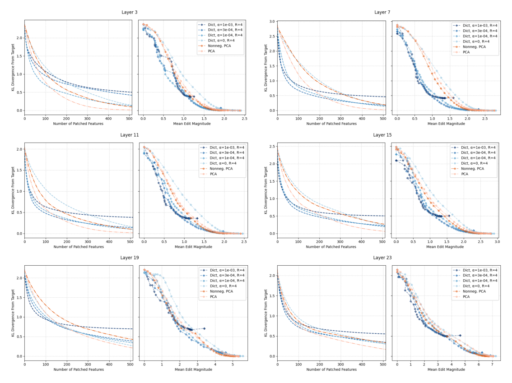

IOI feature-patching precision across six more Pythia-410M layers

How the six layer-panels are built
Six panels, one per residual-stream layer of Pythia-410M (layers 3, 7, 11, 15, 19, and 23 of its 24 total layers, indexed 0-23), arranged three rows by two columns. Each layer-panel is itself a pair of plots reproducing the two-plot format used for layer 11 in the main text: the left plot is KL divergence from the target output (y-axis) against the number of patched components (x-axis); the right plot is the same KL divergence against the mean magnitude of the edit made to the residual stream (x-axis) as more components are added. Lines are different decompositions: several sparse dictionaries (different L1 alpha values at expansion ratio R=4, plus an unpenalized alpha=0 dictionary) and two PCA baselines, ordinary PCA and a non-negative variant. A naive pitfall: axis ranges differ across layers -- the edit-magnitude axis tops out near 2.5 for layer 3 but near 7 for layer 23 -- so absolute KL or magnitude values are not comparable panel to panel; only the relative ordering of curves within a panel is (sparse-autoencoders, §"F EDITING IOI BEHAVIOUR ON OTHER LAYERS", p. 19). Small legend and tick text in these twelve sub-plots is not reliably legible at this crop size beyond the axis ranges and curve groupings described here.
What it shows
Across all six layers, the sparse-dictionary curves sit below and to the left of the PCA curves in the number-of-patched-features plots, meaning dictionary features reach a given KL divergence from the target with fewer patched components than PCA does at every layer tested, not just layer 11. In the edit-magnitude plots the separation is smaller and the curve families overlap more, though the most heavily-penalized dictionary (highest alpha) tends to plateau at a higher minimum KL divergence than the others, echoing the sparsity/reconstruction-accuracy tradeoff already seen in the main-text result.
Generalizing the IOI result
This appendix checks that the main-text finding for layer 11 is not a one-layer coincidence (sparse-autoencoders, §"F EDITING IOI BEHAVIOUR ON OTHER LAYERS", p. 19). Repeating the Dictionary-feature patching procedure procedure, built on Activation patching, across six more layers of Pythia (model suite)'s 410M model on the Indirect Object Identification (IOI) task shows the same qualitative pattern holds throughout the network's depth: dictionary features localize the behavior more tightly than Principal Component Analysis (PCA) components.